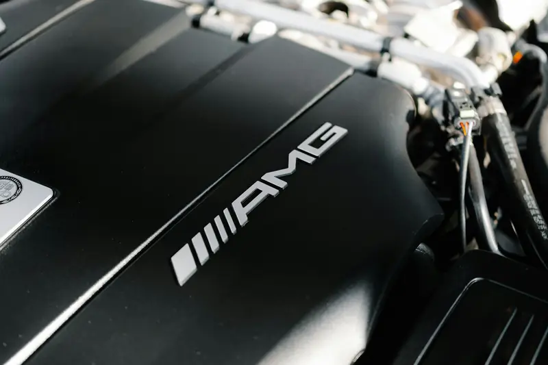

Group 01 / 02
Timing, Sealing and Cooling Repairs
These repairs keep your engine in time, sealed and at the right temperature. In Abu Dhabi, these are also the parts heat attacks first.
5 servicesA rattle on a cold start. A faint smell of burning oil. A check engine light that comes back two days after someone “cleared” it. Mercedes engines rarely fail without warning, but the warnings are easy to misread. We trace every fault to its source, then fix it properly.
Most engine repairs get expensive only when an early sign is ignored. Here is what common symptoms usually point to.
Likely causeTiming chain stretch or a leaking tensioner
Book soon. A jumped chain can bend valvesLikely causeCoolant leak, failing pump, thermostat or fan
Stop driving. Overheating can warp the headLikely causeHead gasket failure
Stop drivingLikely causeMisfire from coils, plugs or injectors, or worn engine mounts
Book within daysLikely causeValve cover, cam adjuster or rear main seal leak
Book soon. Oil can damage wiring and mountsLikely causeTurbo or boost leak
Book within daysLikely causeEngine has entered limp mode to protect itself
Get it scanned right awayFrom a single faulty sensor to a full rebuild, we handle every level of engine work on your Mercedes.
These repairs keep your engine in time, sealed and at the right temperature. In Abu Dhabi, these are also the parts heat attacks first.
5 servicesA short rattle on cold start often means a stretched chain or leaking tensioner. We replace the chain, guides and tensioner together, then test the camshaft adjusters and solenoids in the same visit.
Ask about thisCoolant loss, white smoke or oil in the coolant usually points to a failed head gasket. We pressure test the system, machine the head flat and fit new stretch bolts as Mercedes specifies.
Ask about thisOverheating caused most breakdowns one UAE recovery operator handled during the 2026 Eid break. We test the water pump, thermostat, radiator, fan and electric coolant pump to find the real cause.
Ask about thisA 2026 review of over 20,000 UAE inspections found active oil leaks in 15% of cars. We trace the source with UV dye and replace the exact gasket or seal, from valve covers to the rear main seal.
Ask about thisShaking at idle that smooths out when driving usually means worn mounts. The same 2026 data linked idle vibrations to worn mounts in 58% of cars, so we replace them in pairs.
Ask about this
These repairs restore lost power and smoothness. They also cover the bigger calls, when an engine needs rebuilding or replacing.
5 servicesA misfire feels like a stumble and often flashes the check engine light. We read misfire counts per cylinder and test coils, plugs, injectors and the fuel pump, replacing only the faulty part.
Ask about thisPower loss, whistling or blue smoke can point to a worn turbo or a split boost hose. We smoke test for leaks first, then replace the turbo only if needed and flush its oil lines.
Ask about thisEngines like the M264, M276 and M256 build up carbon on their intake valves over time. We remove it with walnut blasting to restore smooth idle, power and fuel economy without harming the metal.
Ask about thisHigh oil use, low compression or knocking may call for a full rebuild. We measure every wear surface and check V8s like the M278 for cylinder bore scoring before quoting.
Ask about thisWhen damage is severe, a replacement engine can cost less than a rebuild. We source genuine or tested units, transfer your sensors and code the engine to your car before handover.
Ask about thisEach Mercedes engine family has its own known weak points. Knowing them lets us check the right parts first.
Newer engines are not fault-free either. On the M256, a US safety recall covered 3,264 2019 CLS models after the coolant pump wire was found able to rub against the fan. That fault risked overheating and a shutdown of the 48V system.
Your engine already runs near 100°C inside. Abu Dhabi summers add 45°C or more outside, plus long idling in traffic with the AC on full. Cooling parts, rubber seals and engine oil all work harder.
The pattern shows in UAE data. A 2026 analysis of over 20,000 inspections found idler pulley noise in 38% of cars and noisy engine belts in another 27%. With over 4.5 million active vehicles on UAE roads, those small faults add up to a lot of summer breakdowns.
Oil quality matters just as much. Camshaft adjuster solenoids gather sludge when oil isn’t changed often enough, which starves them of oil pressure. Timing chains suffer the same way. A regular Mercedes oil change with MB-approved oil is the cheapest engine protection you can buy.
The right fix depends on what failed and how far the damage spread. This is how we guide the decision.
Targeted repair
WhyFixes the fault at the lowest cost
Timing chain kit
WhyRestores timing before damage spreads
Head gasket and head machining
WhySaves the block if compression is sound
Full overhaul or rebuild
WhyRestores the original engine and its matching numbers
Engine replacement
WhyOften cheaper than rebuilding major damage
Every engine job follows the same five steps, so you always know what is happening and why.
We read fault codes, review live data and run compression, leak-down or smoke tests where needed. This shows the real cause before any part is touched.
You get a clear report of what failed, why it failed and what it will cost. We share photos or readings so you can see the fault yourself.
No work starts until you approve the line-by-line quote. If we find anything new during the repair, we call you first.
We fit genuine or OE-quality parts and follow Mercedes torque specs and procedures. Related wear parts are checked so the same fault doesn't return.
We road test the car, rescan every module and hand it back with a short report. Your invoice lists every part number for warranty and resale records.
MOIAT-certified, Mercedes-focused and rated 4.5 from 765 Google reviews. Here is what that means for your car.
Our team knows each engine family's weak points and checks those parts first on every job.
XENTRY/STAR-compatible software reads every engine module and runs Mercedes guided tests.
We find out why a part failed and fix that cause, not just the broken part.
Your quote shows both part options side by side, with the exact price difference.
You get a line-by-line quote, and we call you before doing any extra work.
Save up to 35% on various services, without cutting corners on parts or workmanship.
It depends on the engine and the fault. A sensor or coil repair costs far less than a timing chain job or a full rebuild. As an international benchmark, M276 timing chain replacements run about $3,500 to $5,000 (roughly AED 12,800 to 18,400) in the US. We give you a fixed quote after diagnosis.
Minor repairs like coils, sensors or mounts usually take one day. Timing chain and head gasket jobs take two to five days. Full rebuilds take longer, depending on parts and machining.
A steady light means the car needs a scan soon. A flashing light usually signals a serious misfire that can damage the catalytic converter. If the light flashes or the temperature rises, stop driving and call us.
There is no fixed interval. Chains are designed to last, but wear faster with poor oil changes. Replace it if you hear a cold-start rattle or see camshaft timing codes.
Yes. We work on AMG V8s like the M177 and M157, and on 48V mild-hybrid engines like the M256, including integrated starter-generator faults.
Yes. We offer genuine Mercedes-Benz parts or OE-quality parts from the same suppliers. You choose, and the quote shows both.
Ask us about the warranty on your specific repair before work starts. Every invoice lists the parts and part numbers fitted, which keeps your service history documented and protects your warranty position and resale value.
 Brake RepairPads, discs, DOT 4 Plus fluid, ABS and AMG brakes.
Brake RepairPads, discs, DOT 4 Plus fluid, ABS and AMG brakes. Transmission Repair7G, 9G-TRONIC and DCT gearbox repair and rebuilds.
Transmission Repair7G, 9G-TRONIC and DCT gearbox repair and rebuilds. PaintingPaint-code matching, panel paint, resprays and ceramic coating.
PaintingPaint-code matching, panel paint, resprays and ceramic coating. Body ShopCollision, dent, bumper and aluminium repair with ADAS calibration.
Body ShopCollision, dent, bumper and aluminium repair with ADAS calibration. DiagnosticsXENTRY full-module scans, live data and warning lights.
DiagnosticsXENTRY full-module scans, live data and warning lights. Oil ChangeMB 229-approved oil, genuine filters and ASSYST reset.
Oil ChangeMB 229-approved oil, genuine filters and ASSYST reset. Electrical RepairBattery, SAM module, wiring, 48V and lighting faults.
Electrical RepairBattery, SAM module, wiring, 48V and lighting faults. AC RepairR1234yf regas, compressors, leaks and climate control.
AC RepairR1234yf regas, compressors, leaks and climate control.Don’t wait for a small rattle or leak to become a major repair. Book a diagnosis today and get a clear answer on what your engine needs. Our Mercedes engine repair team in Abu Dhabi is ready to help.